Day 2
March 3rd, 2026
Alright so that was a productive run.
I can unlock the orchard now.
I also believe I have verified that the chess pieces are room specific and not tied to the placement of the room.
Perhaps I need to draft the rooms such that specific chess pieces are placed in specific sections of the board?
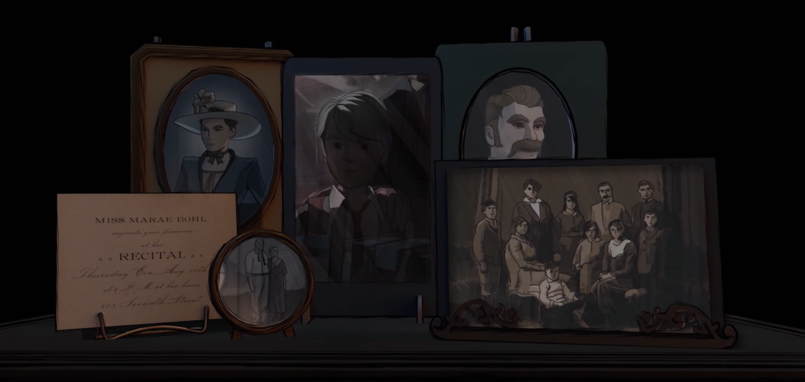

(The game also does a lot of name dropping at the very beginning. But all of those names are also dropped later in a newspaper in the morning room, so I'll just wait till then to record it.)
I also immediately looked around the grounds as much as I could before venturing forward.


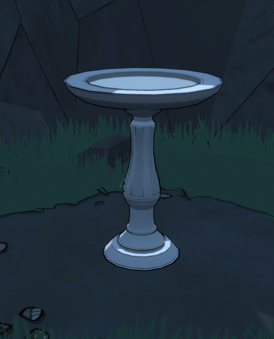

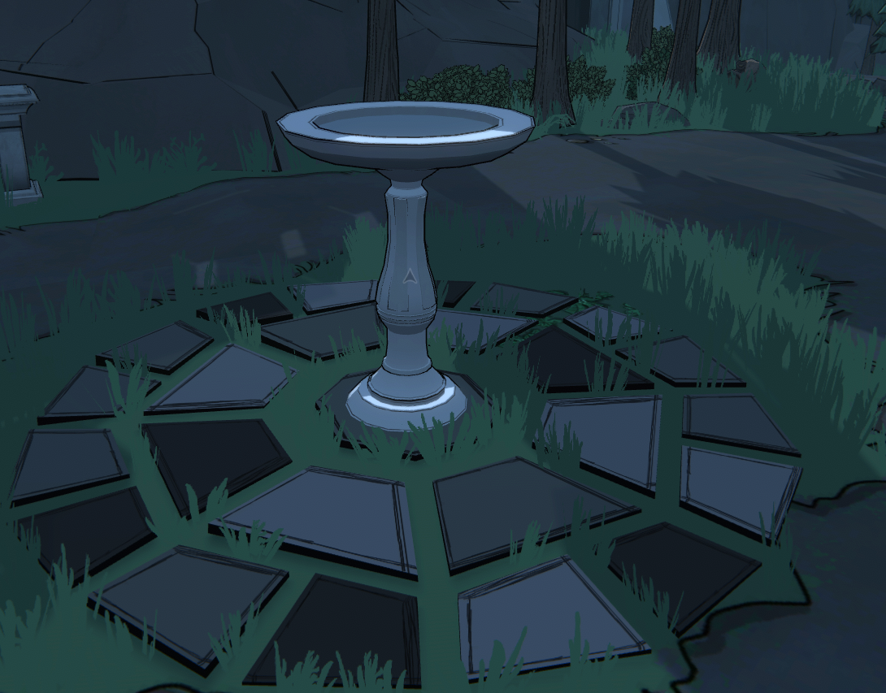
After reaquainting myself with all the locked areas, and locations of various things I actually started my run proper.
My first day looked like this:

I don't remember a lot of things from my first play through of the game, but there's a lot of stuff that quickly came back to me.
For example I pretty quickly remembered how the pictures puzzle for each room location worked. And with a combination of solving them and my memory I was able to rather quickly rediscover the following:
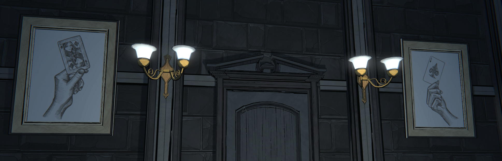

I also immediately refound a safe.

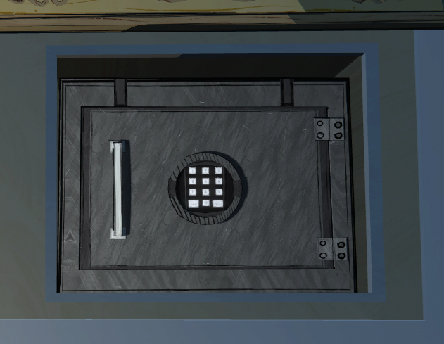
I also tried to record anything and everything that caught my eye. But I wasn't quite as meticulous about it as I would've liked because it was late at night and Tina was begging me to get off the computer.
Still here's what I got:

(I vaguely remember this image being in one of the books in the library.)

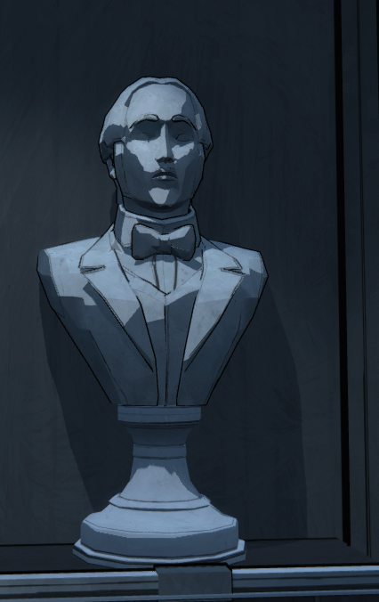

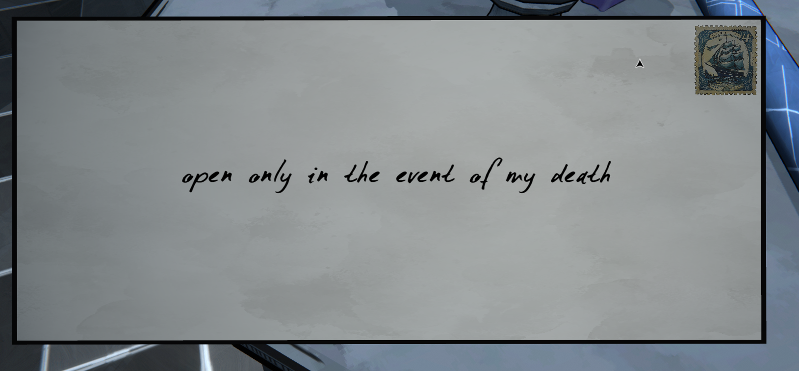
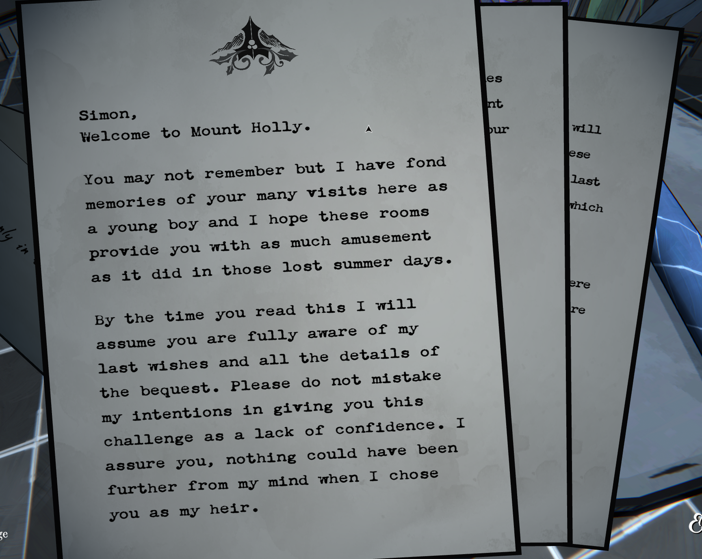
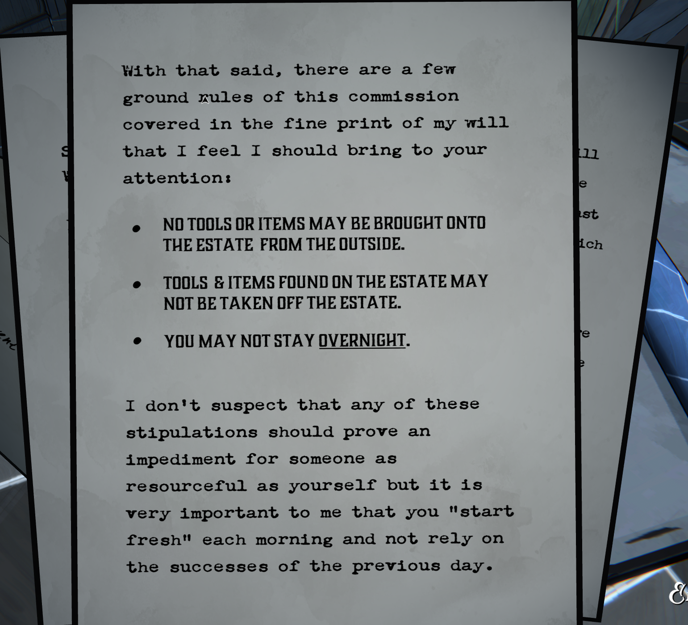
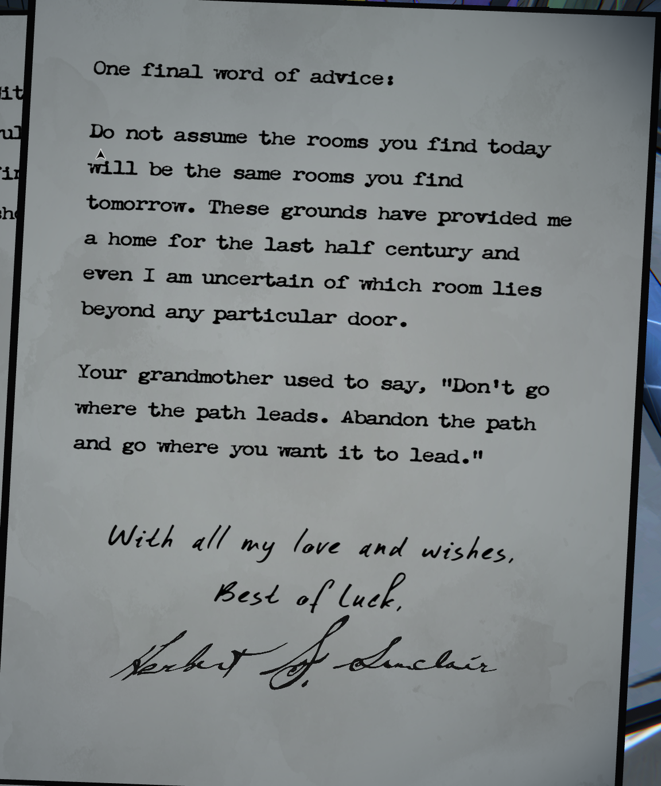
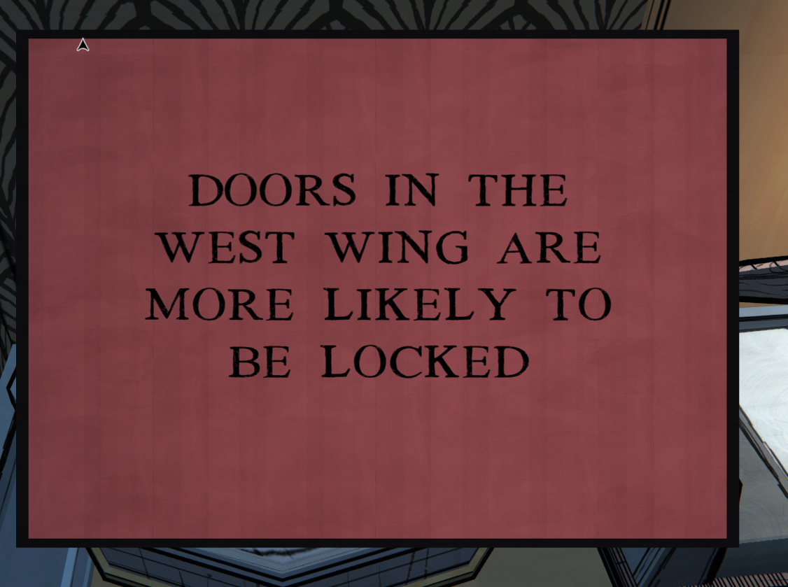
I do in fact remember that red notes are false.

Why is it lit up on a pedastal? Does it actually matter? Who knows?
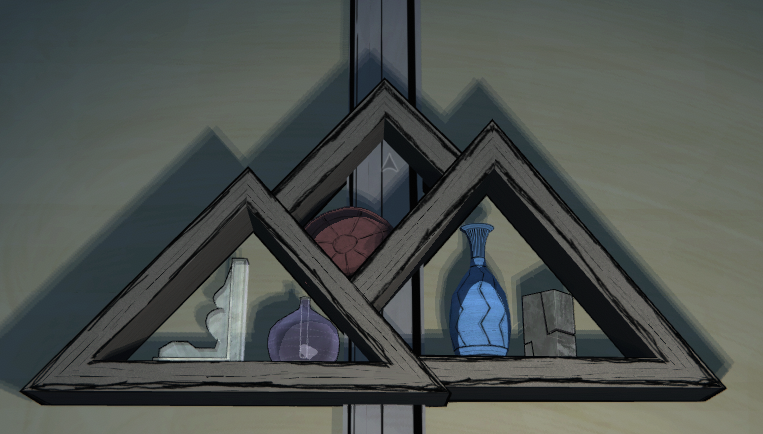
This sort of evokes the mountain. What does it all mean?

Fucking Chess Pieces. What are they? Why are they there? Is it tied to room type or location like the picture puzzle? Will need to pay attention in my next run.

Those circles look like buttons.
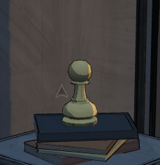

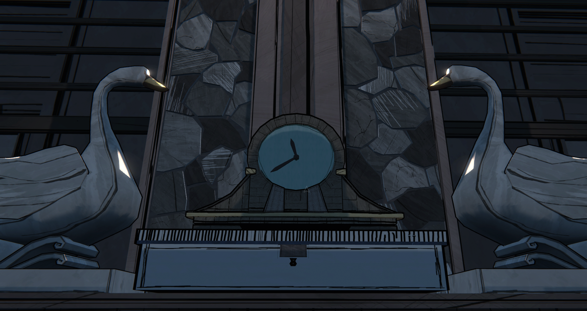
My run didn't have anything particularly noteworthy occur. I unlocked the Observatory's first star, triggered a package being sent to the mail room, and drafted a Morning Room. That's about all that's relevant for the future.
Upon exiting the game I also realized the main menu probably has clues.